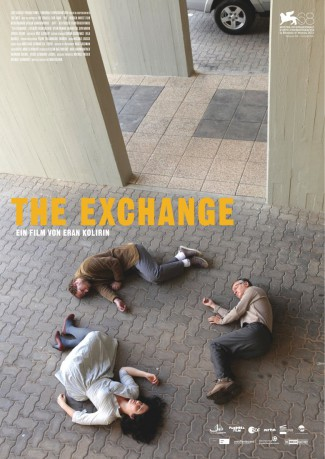

#7931 The Exchange
 
 IMDB-Wertung: 6.3 / 10
IMDB-Wertung: 6.3 / 10  Metascore: 0
Metascore: 0 
Ein Mann kommt nach Hause, doch es wirkt, als käme er in das Haus eines Fremden. Alles erscheint plötzlich anders: die Zeit, das Licht, das eigene Leben - Oded wirft von außen einen Blick auf seinen Alltag. Nach und nach versucht er, sich der Spirale aus Ritualen und Verpflichtungen zu entziehen. Er beschließt, sich beurlauben zu lassen, und entdeckt gemeinsam mit seinem Nachbarn Yoav die bisher kaum wahrgenommenen Tagesabläufe aus einer beobachtenden Perspektive. Mit kleinen Provokationen versucht Oded, die festgefahrenen Strukturen aus ihrer Ordnung zu bringen.
Jahr: 2011
Dauer: 88 Minuten
FSK: 12
Land: Israel Studio: Pyramide DistributionTonspuren:
Untertitel:
Auflösung: 720p (1280x720) Größe: 3778 MB
Genre: Drama
Regisseur: Eran Kolirin
Drehbuch: Eran Kolirin
Soundtrack:
Darsteller:
- Rotem Keinan als Oded
- Dov Navon als Yoav
- Shirili Deshe als Yael
- Maya Gasner als Woman with a baby
- Roberto Pollack als Neighbor
- Sharon Tal als Tami
- Shiri Ashkenazi als Adi
- Nadav Asulin als The father in the lobby
- Dina Blay als Oded 's mother
- Carmit Mesilati Kaplan als Mother in the lobby
Datei: X:\2011(A-F)\Exchange, The (2011, FSK12, 1280x720).mkv seit 07.01.2018
Festplatte: HD 2010(G-Z)-2011(A-F)
 Es gibt insgesamt 86 Filme in der Gruppe '2011(A-F)'
Es gibt insgesamt 86 Filme in der Gruppe '2011(A-F)'